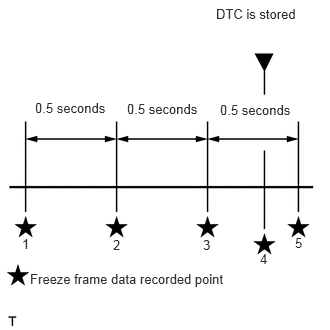

1VD-FTV ENGINE CONTROL ECD SYSTEM(w/ DPF) P1603 Engine Stall History
DESCRIPTION
After starting the engine, this DTC is stored when the engine stops without the ignition switch being operated.
Using the GTS, the conditions present when the DTC was stored can be confirmed by referring to the freeze frame data. Freeze frame data records engine conditions when a malfunction occurs. This information can be useful when troubleshooting.
It is necessary to check if the vehicle has ran out of fuel before performing troubleshooting, as this DTC is also stored when the engine stalls due to running out of fuel.
| DTC No. | Detection Item | DTC Detection Condition | Trouble Area | MIL | Memory |
|---|---|---|---|---|---|
| P1603 | Engine Stall History | 5 seconds or more elapse after starting the engine, and the engine speed drops to 200 rpm or less for 0.5 seconds or more without the ignition switch being operated.
(for manual transmission: fuel pressure drops to 10000 kPa or less and fuel injection is stopped) (1 trip detection logic) |
·
Fuel injector assembly ·
Injector compensation code ·
Fuel leak ·
Suction control valve (fuel supply pump assembly) ·
Low quality fuel ·
Fuel filter element assembly air bleed problem ·
Fuel filter element assembly clog |
- | DTC stored |
| DTC No. | Data List |
|---|---|
| P1603 | ·
Engine Speed ·
Battery Voltage ·
Engine Speed of Cyl #1 (to #8) (Output only when the "Check the Cylinder Compression" Active Test is performed) ·
Target Common Rail Pressure ·
Common Rail Pressure ·
Injection Feedback Val #1 (to #8) ·
Injection Volume |
CAUTION / NOTICE / HINT
Fuel system
The following malfunctions may be present in the fuel system.
Problem with injector assemblies.
Problem with fuel supply pump assembly.
Air in fuel pipe.
Fuel filter element assembly clog.
Engine assembly
The following malfunctions may be present in the engine assembly.
Insufficient compression.
- HINT:
- ·
In contrast to normal malfunction diagnosis for components, circuits and systems, DTC P1603 is used to determine the malfunctioning area from the problem symptoms and freeze frame data when the user mentions problems such as engine stall.
As the DTC can be stored as a result of certain user actions, even if the DTC is output, if the customer makes no mention of problems, clear the DTC without performing any troubleshooting and return the vehicle to the customer.
·DTCs related to engine stall and starting problems may be detected due to operations performed by the user. The following is an example. Ask questions to the user about how the vehicle is operated and give advice as necessary.
·For vehicles with an automatic transmission, the engine stalls due to shifting too early and the engine load cannot keep up.
·If any other DTCs are output, perform troubleshooting for those DTCs first.
·Read freeze frame data using the GTS. Freeze frame data records the engine condition when malfunctions are detected. When troubleshooting, freeze frame data can help determine if the vehicle was moving or stationary, if the engine was warmed up or not, and other data from the time the malfunction occurred.
·When confirming the freeze frame data, be sure to check all 5 sets of freeze frame data.
·2.25,0.063 3.188,0.271 0.938,0.208 10 false DTC is stored 1.323,1.052 2.104,1.229 0.781,0.177 10 false 0.5 seconds 0.365,1.042 1.146,1.24 0.781,0.198 10 false 0.5 seconds 0.313,2.823 2.656,3.021 2.344,0.198 10 false Freeze frame data recorded point 2.292,1.063 3.073,1.26 0.781,0.198 10 false 0.5 seconds 0.229,2.458 0.323,2.615 0.094,0.156 10 false 1 1.177,2.469 1.292,2.615 0.115,0.146 10 false 2 2.115,2.469 2.219,2.615 0.104,0.146 10 false 3 2.708,2.615 2.823,2.781 0.115,0.167 10 false 4 3.073,2.448 3.177,2.604 0.104,0.156 10 false 5
The fourth set of freeze frame data is the data recorded when the DTC is stored.
PROCEDURE
Connect the GTS to the DLC3.
Turn the ignition switch to ON and turn the GTS on.
Enter the following menus: Powertrain / Engine and ECT / Trouble Codes.
Record the stored DTC and freeze frame data.
- Powertrain > Engine and ECT > Trouble Codes
- 50001 234
- HINT:
-
This freeze frame data shows the actual engine conditions when engine stall trouble occurred.
- Result:
Proceed to NEXT
NEXT
Connect the GTS to the DLC3.
Turn the ignition switch to ON and turn the GTS on.
Enter the following menus: Powertrain / Engine and ECT / Trouble Codes.
Read the DTCs.
- Powertrain > Engine and ECT > Trouble Codes
- 50001 234
- Result:
Result Proceed to DTC P1603 is output A DTC P1603 and other DTCs are output B
- HINT:
-
If any DTCs other than DTC P1603 are output, troubleshoot those DTCs first.
A
B
Connect the GTS to the DLC3.
Start the engine and turn the GTS on.
Warm up the engine (engine coolant temperature is 75°C (167°F) or higher).
Enter the following menus: Powertrain / Engine and ECT / Data List / Diesel Starting.
Take a snapshot when idling with no load after the engine is warmed up and when the problem is occurring.
- HINT:
- ·
A snapshot can be used to compare vehicle data from the time of the malfunction to normal data and is very useful for troubleshooting.
·The shift lever should be in neutral and the A/C switch and all accessory switches should be off.
·If rough idling occurs when the A/C switch is on, take another snapshot with the A/C switch on.
·Take a snapshot when the problem is occurring, such as when the engine is cold. However, if the problem does not reoccur, it is acceptable to only take a snapshot after the engine is warmed up.
- Result:
Proceed to NEXT
NEXT
Determine the cause of the problem based on the freeze frame data recorded in procedure 1 and the Data List values recorded when idling the engine in procedure 3.
- Battery Voltage:
Judgment of Data List Values Problem Cause Normal Condition Diagnosis Note "Battery Voltage" in freeze frame data is below 6 V Engine starting trouble may have occurred because battery is fully depleted During cranking: 6 V or higher The battery may be fully depleted or the battery terminals may be loose.
- Common Rail Pressure:
Judgment of Data List Values Problem Cause Normal Condition Diagnosis Note "Common Rail Pressure" in freeze frame data is below 25000 kPa (254.9 kgf/cm2, 3626 psi) Problem supplying fuel to fuel supply pump assembly (low pressure side)
·Ran out of fuel, air in fuel, fuel frozen (in this case, values of "Coolant Temp" in freeze frame data are low)
·Fuel filter element assembly clog, fuel line clog (low pressure side) or fuel leak
·Feed pump (in fuel supply pump assembly) malfunctioning
Problem supplying fuel to fuel supply pump assembly (low pressure side) or problem on high pressure side
·Fuel supply pump assembly (pre-stroke control valve operation malfunction)
·Common rail assembly
When in a stable condition such as when the engine is idling after being warmed up, the common rail pressure is within 5000 kPa of the target common rail pressure
- HINT:
-
In order to maintain the injection amount before an engine stall, the target common rail pressure is increased drastically. At this time, Common Rail Pressure may not follow correctly, but this is normal behavior and not a malfunction.
If "Common Rail Pressure" is 10000 kPa (102.0 kgf/cm2, 1451 psi) or less, fuel injection control is stopped.
- HINT:
-
Refer to Engine Difficult to Start or Stalling for the inspection procedure.
-
Click here(
 201608,999999,_51,_029760,_0282525,RM100000000ZU35,)
201608,999999,_51,_029760,_0282525,RM100000000ZU35,)
- Injection Feedback Val #1(to #8):
Judgment of Data List Values Problem Cause Normal Condition Diagnosis Note "Injection Feedback Val #1 (to #8)" in freeze frame data is not +3.0 mm3/st or less Fuel injector malfunction or compression problem Less than +3.0 mm3/st If an fuel injector is malfunctioning, even though the engine starts, idling is rough.
- HINT:
-
Refer to Engine Difficult to Start or Stalling for the inspection procedure.
-
Click here(
201608,999999,_51,_029760,_0282525,RM100000000ZU35,)
"Injection Feedback Val #1 (to #8)" in Data List is not +3.0 mm3/st or less when idling
- Injection Volume:
Judgment of Data List Values Problem Cause Normal Condition Diagnosis Note "Injection Volume" in Data List is more than 13 mm3/st and "Injection Feedback Val #1 (to #8)" is within range of 3.0 mm3/st when idling after warming up engine Fuel Injectors of all cylinders malfunctioning - - HINT:
-
Refer to Engine Difficult to Start or Stalling for the inspection procedure.
-
Click here(
201608,999999,_51,_029760,_0282525,RM100000000ZU35,)
- Immobiliser Fuel Cut History:
Judgment of Data List Values Problem Cause Normal Condition Diagnosis Note "Immobiliser Fuel Cut History" in freeze frame data is OFF to ON Fuel injection has stopped due to engine immobiliser system.
- HINT:
-
"Main Injection Period" in freeze frame data is 0 μs
OFF ·Inspect engine immobiliser system.
·Inspection looseness in battery terminal.
·Inspect connection condition of ECM power supply system wiring.
- HINT:
-
Perform the next inspection if there are no problems with the above items.
- Result:
Proceed to NEXT
NEXT